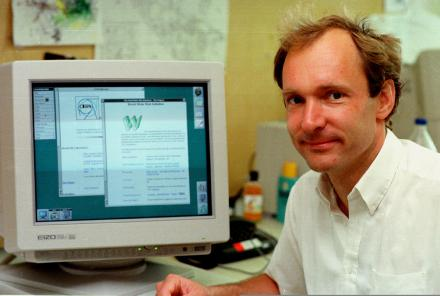
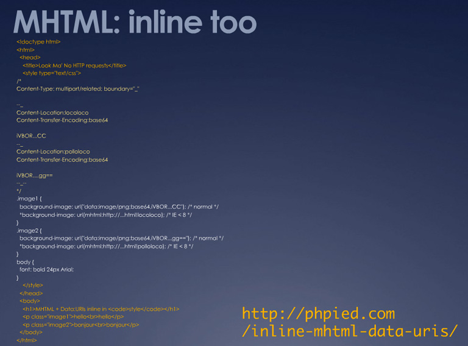
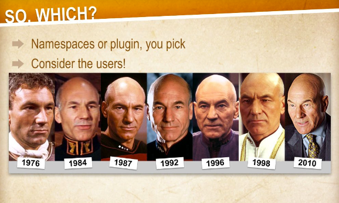
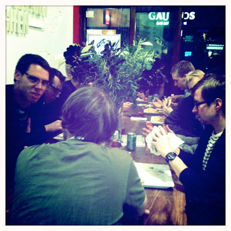
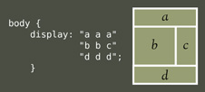
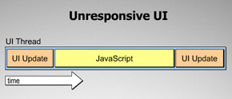
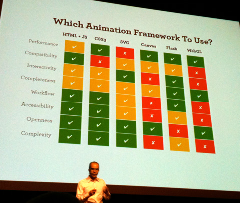
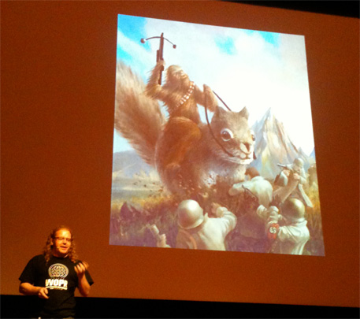

Dit is een HTML5 presentatie
Gebruik → voor een volgende slide.
Zoom in/uit: Ctrl of Command + +/-
HTML5 en Fronteers 2010
De frontend ninja’s van de VPRO:
- Frank Bosma
- David Pronk
- Hay Kranen
HTML5
- Wat is HTML5?
- De taal van het internet
<html> <p> <b> <i>
- HTML5 = De volgende versie van HTML :)
Tim Berners-Lee 
W3C
Versies van HTML
- HTML 2.0
- HTML 3.0
- HTML 4.0
W3C: XHTML
- Alles moet valide zijn
- In XHTML2: oude tags die niet ‘semantisch’ zijn verdwijnen:
<b><i> - Vooral gericht op documenten schrijven, niet op web apps
WHATWG: HTML5
- Groep browsermakers:
- Opera
- Mozilla
- Apple
- Vriendelijk voor oude markup
- Dingen die echt nodig zijn en in browsers worden gezet
FIGHT!
DOCTYPE in XHTML
<?xml version="1.0" encoding="UTF-8"?>
<?xml-stylesheet type="text/css"
href="http://www.w3.org/MarkUp/style/xhtml2.css"?>
<!DOCTYPE html PUBLIC "-//W3C//DTD XHTML 2.0//EN"
"http://www.w3.org/MarkUp/DTD/xhtml2.dtd">
<html xmlns="http://www.w3.org/2002/06/xhtml2/" xml:lang="en"
xmlns:xsi="http://www.w3.org/2001/XMLSchema-instance"
xsi:schemaLocation="http://www.w3.org/2002/06/xhtml2/
http://www.w3.org/MarkUp/SCHEMA/xhtml2.xsd"
>
<head>
<title>Virtual Library</title>
</head>
<body>
<p>Hallo wereld!</p>
</body>
</html>
DOCTYPE in HTML5
<!doctype html>
<html>
<head>
<link rel="stylesheet" href="style.css" />
<title>Title</title>
</head>
<body>
<p>Hallo wereld</p>
</body>
</html>
FATALITY!

Nieuwe mogelijkheden
<canvas><svg><audio><video><input>types<section>,<header>,<footer>, etc.
<canvas>
<svg> 1/2
svg 2/2
<audio>
<audio src="http://files.vpro.nl/media/python.oga" controls></audio>
<video> 1/3
<video src="http://files.vpro.nl/media/trololo.mp4" controls></video>
<video> 2/3
<input> types
Fronteers 2010
Dag 1
 |
The Design of HTML5
door Jeremey Keith, @adactio, video, slides
HTML5?
toekomst van HTML: HTML5 (WHATWG) of XHTML2 (W3C ) ?
HTML5 wint oa vanwege de HTML5 Design Principles
You'll probably find the design principle, or multiple design principles, behind all good examples of anything that's been built collaboratively.
En juist deze principes kunnen er voor zorgen dat beide werkgroepen samen kunnen werken aan de toekomst van HTML
Erg belangrijk principe voor de ‘winst’ van HTML5: Robustness Principle
Be conservative in what you send, be liberal in what you accept
vb XHTML2: omdat het geserveerd moet worden als XML breekt de browser het renderen af al bij 1 error.
JavaScript, Like a box of chocolates
door Robert Nyman @robertnyman
Perfecte JavaScript 101. De basis ‘and then some more’. Zien dus!
Vector Graphics for the web
door Brad Neuburg, @bradneuburg, video, slides
Scalable Vector Graphics
Dave Weinberger: Small pieces loosely joined
SVG is een onderdeel van je ‘toolbelt’, gecombineerd met CSS, HTML5 en JavaScript in staat tot veel. Zijn presentatie slides zijn hier een voorbeeld van.
Wanneer wel
- dynamisch schalen
- als je CSS wilt gebruiken (geen colorizehex meer nodig :) )
- elk SVG (sub)element kan op de muis reageren
- zoek machine vriendelijk
Wanneer niet
- als je heel veel plaatjes (met interactie) nodig hebt, bv in spelletjes
- pixel georiënteerde applicaties
Vector Graphics for the web
Hoe?
- direct embedding
- <img src=“.svg” />
- Object tag, datatype=“image/svg+xml”
- Background image
- SVG Web
- Raphael
- jQuery SVG
- Onderdeel van Ample SDK
Nog meer interessante links
A CSS3 talk
door Håkon Wium Lie (bedacht CSS in 1994) video
1994 "World Wide Web: You click, we do the rest!" "Border-radius, isn't that something from the 70's? nobody is gonna use that!?" "The web didn't become popular because of the marketing" "The Human mind is more wired for beauty, scientists are wired for structure."
- backgrounds en borders
- fonts (ook fonts met plaatjes)
- multi-column layout
- transitions
- Media Queries, bijv. @media (max-width: 600px) { … }
- Generated content for paged media, waaronder dynamische paginering
- Progressive enhancement in CSS
- ook float:bottom, float:top
Progressive Downloads and Rendering
door Stoyan Stefanov, @stoyanstefanov, slides , video
Highspeed praatje over website performance.
- Een website voelt traag wanneer het langer dan 200ms duurt voordat er iets zichtbaar is.
- 50% van de gebruikers komt met een lege (front-end) cache, dus optimaliseer hiervoor
Een hoop praktische tips om vertragingen tegen te gaan:
- Basis
- zo weinig mogelijk HTTP requests
- Gzip
- Minification
- Image smushing (verwijdert overtollige bytes)
- Expires headers
- Content Delivery Networks
- Progressive downloads (JavaScript inladen middels defer attribuut of asynchroon)
- Chunked Encoding / Flushing (Google doet dit door header, resultaten en footer in chunks aan te bieden, maar ook JSON)
Progressive Downloads and Rendering
- CSS rendering
- inline alle @media en print CSS
- blokkeert wanneer een inline script volgt, of in conditional comments (voeg ip daarvan een class toe aan de HTML tag)
- Preload content op basis van verwachte volgende pagina
- doe dit zonder bv scripts ook uit te voeren via een Image.src of een object tag
- Gebruik data:uri en base64 encoding voor inline images (zie Google thumbs)
- voor IE < 8 : M(ime)HTML “It is possible to do a complete web app in one single HTTP request”
- CSS Sprites
Handige links:
- Perfplanet.com/ News and views from the web performance blogosphere
- Chunk encoding viewer
- CSS Sprites http://spriteme.org/
Progressive Downloads and Rendering

CSS Workflow
door Jina Bolton @jina, slides, video
"Be regular and orderly in your life so that you may be violent and original in your work" - Gustave Flaubert "A good workflow = more time to be creative" - Jina
Haar workflow:
- Evaluatie
- evalueer alle pagina’s om een goed beeld te krijgen van de architectuur
- Organisatie (creeer systemen ipv pagina’s)
- folder structuur
- Meaningful markup
- liever duidelijk dan afgekort
- wees consistent (- of _)
- welke doctype
CSS Workflow
- Opbouw van stylesheets
- resets (vb http://html5doctor.com/html-5-reset-stylesheet/ ) en basis
- alfabetische ordening of lexografisch
- typografie, layout, plugins, print
- IE / Cross browser, gebruik conditional HTML classes
- Microformats
- Debugging
- Firebug
- W3C
- Diagnostic CSS, http://meyerweb.com/eric/tools/css/diagnostics/
Handige links:
- ProCSSor, CSS formatter
- HTML5 Boilerplate, een HTML5 starterskit
Reusable Code, for good or for awesome!
door Jake Archibald @jaffathecake, slides, video
5 elements to writing good reusable code:
- Consistency
- Flexibillity (gemakkelijk voor derden)
- readabillity
- writeabillity (documentatie)
- kinda-useful-abillity
Steps for writing reusable component code:
- Define requirements
- Write API before code
- Hoe schrijf je je code
- Gebruik Namespaces of een library plugin
- wees consistent en schrijf leesbare code, parameters, functienamen, ..
- Testing
- en laat je code zien aan en documentatie lezen door anderen.
Reusable Code, for good or for awesome!
"Be consistent!"

Dat was dag 1:

Dag 2
Real-world Responsive Design
door Stephen Hay, @stephenhay, slides, video
Ethan Marcotte’s artikel op A List Apart barst een discussie los over Responsive Webdesign. Het betreft het gebruik van CSS media queries om de layout van een site aan te passen aan z’n omgeving, bijvoorbeeld met het oog op mobiele devices.
Discussie: Media Queries: Silver Bullets or Fools Gold?
"Design is the method of putting form and content together" - Paul Rand
- Layout != design
- Design = thinking about the content and scenario’s (platform agnostic)
- Design = thinking about the user-experience (platform aware)
- Media Queries zijn (maar) een gereedschap voor adaptive layout, niet de oplossing voor het maken van sites voor alle type devices en use-cases
Real-world Responsive Design
Een goede presentatie over “thinking about the user” als het aankomt op mobiele devices en responsive (web)design:
Real-world Responsive Design
Technieken voor responsive design
Nu
- CSS Media Query
- Met JavaScript resoluties checken
- Progressive enhancement (begin inclusief, niet exclusief)
- Omarm onzekerheid, gebruik fluid grids, niet een aantal vaste layouts
- meta viewport
- SVG
Toekomst
- CSS3 Template Layout module 
- CSS3 Flexible Box Layout module
The State of HTML5: Inaugural Address
door Paul Irish, @paul_irish, slides, video
Hay zal een goed verhaal houden over HTML5.
Kijk verder de video of bekijk zijn (net als Brad Neuburg) geheel in HTML5 geschreven en continu geupdate presentatie slides als uithangbord van de mogelijkheden die HTML5 biedt.
Ook handig: Modernizr, zijn HTML5 browser-capabillity detectie script.
Creating lifelike designs with CSS3
door Meagan Fisher, @owltastic, video
Mooie CSS3 showcase van Meagan.
Een CSS3 property om naar uit te kijken is het specificeren van kleur in RGBA, A van alpha! Geen halftransparante achtergrondplaatjes meer nodig!
Handige links / resources
- CSS3please.com Test CSS3 in de browser!
- HandcraftedCSS.com Goed CSS3 boek
- Artikel On Web Typography
- Open Source fonts op The League of Moveable Type
High Performance Javascript
door Nicholas Zakas, @slicknet, slides, video
JavaScript performance directly affects user experience
De browser heeft een UI-thread die zowel JavaScript execution als UI updates regelt, maar niet tegelijkertijd. Beiden komen terecht in 1 UI queue.

0.1 second is about the limit for having the user feel that the system is reacting instantaneously
: Nielsen
Aanbeveling: beperk JavaScript execution tot < 50ms.
High Performance Javascript
During page-load, the page doesn't render while JavaScript is downloaded, parsed and executed
page-load oplossingen
- Scripts at the bottom
- combineer scripts
- maar beter, laad ze dynamisch / async, dit blocked pas wanneer ze worden uitgevoerd.
- gebruik het attribuut ‘defer’. Scripts downloaden direct, maar worden pas na alle UI updates uitgevoerd
runtime oplossingen
- Getimed JavaScript uitvoeren
- Web Workers, processen in een eigen thread. Geen toegang tot de DOM. Nog geen IE ondersteuning.
HTML5 Accessibillity: Is it ready yet?
door Steve Faulkner (@stevefaulkner ) & Hans Hillen (@hanshillen), video
In short: NO
"Accessibility is always bolted on instead of built-in. The earlier it is bolted on, the more robust it is."
De WAI-ARIA (Accessible Rich Internet Applications) specificatie moet ook door HTML5 worden ondersteund om het bolten-on te vergemakkelijken.
html5accessibility.com laat zien hoe ver de browsers zijn.
Hans Hillen toont nog een mooie screenreader demo (29e minuut in de video) welke ook aangeeft dat niet alleen de browsers voor accessibillity problemen zorgen.
Hans stipt daarnaast nog een goede Web Accessibillity resource aan, WebAIM
The Renaissance of Browser Animation
door Cameron Adams, @themaninblue, video
Wanneer gebruik je animaties?
- Attention
- Narrative
- Engaging
- Reponsive interfaces
- Understandable interfaces
- Temporal understanding
- Creative expression
2 animatie modellen
- Artist (gebruikmakend van een canvas dat je per frame cleared)
- Director (het aansturen van meerdere tijdlijnen / acteurs)
The Renaissance of Browser Animation
In de browser:
- HTML/ JS (Director)
- CSS3 transformations (Director)
- SVG (Director)
- Canvas (Artist)
- Flash (Director)
- WebGL (Artist)
Leuke links
- Blobular SVG animatie / spel
- Flowerpower
- three.js brengt 3D naar canvas en SVG indien WebGL niet aanwezig is.
The Renaissance of Browser Animation
Wanneer welke animatie techniek?

Reasons to be Cheerful
door Chris Heilmann, @codepo8, slides, video
"We focus too much on the bad things, that no ones shares with us instead other developers. But if we really look at it, a lot of our grief is home-made"
"The techonologies to build stuff with are pretty easy to learn and massively documented. Back when I started this was different. The main source of knowledge was view-source. This is not needed any more!"
Reasons to be Cheerful
"Our job is awesome. Like Chewbacca on a giant squirrel fighting nazi's with a crossbow"

Reasons to be Cheerful
| Reasons to be cheerful – Fronteers 2010 |